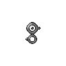
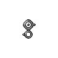
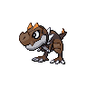
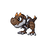

Credits
Tools Used
-
 : The underlying pokemon data (up to the most recent generation, Sword and Shield) for species, images, and typing come from the pokeapi.co RESTful API.
It's a really great repository for all things Pokemon, be sure to check them out or even contribute.
Note that PokeTyped actually doesn't make any active calls to the API, I made a one-time scrape for the relevant data which has been summarized and cached here.
: The underlying pokemon data (up to the most recent generation, Sword and Shield) for species, images, and typing come from the pokeapi.co RESTful API.
It's a really great repository for all things Pokemon, be sure to check them out or even contribute.
Note that PokeTyped actually doesn't make any active calls to the API, I made a one-time scrape for the relevant data which has been summarized and cached here.
-
: Data wrangling and analysis done via Pandas. Special shout-out to my favorite Python IDE ever, Spyder:

- : Visualizations built from the Data-Driven Documents JavaScript library.
- : Feel free to check out my repo if you want to try the code for yourself.
Methods
Only Combinations, No Permutations
There are 18 pokemon types, for 171 possible combinations when taken two at a time. Doubling up on the same type is taken as mono typing, e.g. fire + fire is simply fire . While pokemon with dual types have them in a set order, for PokeTyped, ordering of the types is not considered. This ordering of the types is irrelevant mechanically (except in some minor edge cases).
Varieties vs. Forms
While every pokemon has a given pokedex number, it may come in a bewildering number of variants. The PokeAPI makes a distinction between "varieties" and "forms". Varieties are different enough to be considered a distinct entity. Forms mostly only differ in aesthetics. PokeTyped only reports varieties, and not forms.
For instance, pokemon number 6 is fan-favorite Charizard  .
However, he also has two mega evolutions as well a gigantamax incarnation .
These are all distinct enough in terms of modifying the base stats and abilities of Charizard, that they are considered "varieties" of the base species.
For instance, while Charizard
.
However, he also has two mega evolutions as well a gigantamax incarnation .
These are all distinct enough in terms of modifying the base stats and abilities of Charizard, that they are considered "varieties" of the base species.
For instance, while Charizard  normally has the fire and flying types, Mega Charizard X is fire and dragon .
Thus, each of them has a distinct entry in PokeTyped.
normally has the fire and flying types, Mega Charizard X is fire and dragon .
Thus, each of them has a distinct entry in PokeTyped.
This is contrast with Unown, which has a form for every letter in the alphabet (as well as exclamation and question marks).
Here are Unown A and B:  
Besides this aesthetic difference, all Unown have are the same psychic type with the same stats, and are indistinguishable in battle.
Thus, Unown has only one entry in PokeTyped, and not twenty-eight of them.

Besides this aesthetic difference, all Unown have are the same psychic type with the same stats, and are indistinguishable in battle.
Thus, Unown has only one entry in PokeTyped, and not twenty-eight of them.
Further Exclusions
Totem pokemon are not considered, as players can't even catch them to begin with. I may in future iterations of PokeTyped add the ability to further filter out non-standard forms such as mega evolutions, as they aren't even usable in the latest generation of games (although still useable in Pokemon GO).
Scaling
Uninformative scaling was a common issue I had with other heat maps trying to depict the typing distribution of pokemon when I did my initial research. There are so many Water and Normal pokemon, that these spikes in the data wash out the contrast with all bins outside the diagonal. This also conflicts with one of the main messages and ways to have fun with this graph, which is discovering which type combinations don't exist, or only have a single rare representative.
So, I chose a log scale for several nice properties.
- 1: log(0) is undefined, so I can paint all unused type combinations in stark black.
- 2: log(1) is zero, so I can paint all unique type combinations in pure grey.
- 3: log(x) brings down large outliers, letting you see greater contrast in the lower count ranges.
The scale bar is slightly unusual due to these properties, especially the black bottom part ticked with several zeros. But I hope it's not too off-putting for people, and they can intuit the meaning in the color scheme.
Why PokeTyped?
For Love
My son is very much into Pokemon, and always asking me questions like "What's a fire and grass pokemon?" "What're all the dragon and rock  pokemon?" etc. etc. (the answers are "They don't exist!" and "Tyrunt  and Tyrantrum
pokemon?" etc. etc. (the answers are "They don't exist!" and "Tyrunt  and Tyrantrum  " respectively).
I should have seen this coming since I introduced him to Pokemon, and who am I kidding, I love Pokemon too.
But I couldn't find any website online that could provide answers to such questions up to my standards, with the additional constraint that my son is too young to read and type.
So I created PokeTyped to answer his questions, and also satisfy my own personal curiosity regarding the type distributions and effectivenesses.
" respectively).
I should have seen this coming since I introduced him to Pokemon, and who am I kidding, I love Pokemon too.
But I couldn't find any website online that could provide answers to such questions up to my standards, with the additional constraint that my son is too young to read and type.
So I created PokeTyped to answer his questions, and also satisfy my own personal curiosity regarding the type distributions and effectivenesses.
For Imagination
The rock-paper-scissors typing system is fun to think about, and it's also kind of like taking the classical Greek elements of air , earth , fire , and water , but scaling it up to 18 elements.
It's pure fuel for the imagination. Just try to envision what an "electric and bug" monster would look like and how it would behave. I'll wait... Ok, so one pokemon with this typing is Joltik who is a little fuzzy guy who hops into the fur of another creature to steal their static electricity. Pretty creative, right?
who is a little fuzzy guy who hops into the fur of another creature to steal their static electricity. Pretty creative, right?
Surprisingly, despite the release of over 800+ Pokemon, many of the 171 type combinations remain barren.
For Strategy
In addition to listing which pokemon compose the various type combinations, I wanted PokeTyped to let you explore various tactical options for the combat system as well, via the resistance table. Clicking around is a lot more fluid than selecting two drop-down options for types like I found in other sites.
It can get difficult to keep track of all the type interactions, some of which are asymmetrical.
For example electric  attacks are super effective against water pokemon, but electric
attacks are super effective against water pokemon, but electric  pokemon take the usual x1 damage from water attacks.
This is harder to remember than a symmetrical relationship, like fire attacks being super effective against grass pokemon, and grass attacks being not very effective to fire pokemon.
I.e. fire is the better match up against grass every time, not just on attack, but also defense).
These issues are compounded when you have dual-typed pokemon, which have the effectivenesses multiplied together.
pokemon take the usual x1 damage from water attacks.
This is harder to remember than a symmetrical relationship, like fire attacks being super effective against grass pokemon, and grass attacks being not very effective to fire pokemon.
I.e. fire is the better match up against grass every time, not just on attack, but also defense).
These issues are compounded when you have dual-typed pokemon, which have the effectivenesses multiplied together.
PokeTyped does all these calculations for you, even for the niches that are currently unfulfilled due to missing type combinations.
With the advent of the player vs. player combat in Pokemon GO (by many measures the most popular and played Pokemon game ever), type effectiveness knowledge is a must, as you have to know how to cover the weaknesses between your team's pokemon before you battle, and also play into your strengths on against your opponent's team dynamically. The mainline Pokemon games are not known for their difficulty, but it still pays dividends to have a type effectiveness reference, as the effectiveness multipliers are much stronger than in Pokemon GO (hello complete damage immunity !).
For PokeTyped, I only list the resistances and super effectiveness of incoming attacks against the Pokemon of the given type, and don't bother with which types the Pokemon can potentially do super effective damage against. This is because:
- 1: Pokemon can learn moves outside of their own type, and super effectiveness has a greater effect than STAB (Same Type Attack Bonus)
- 2: With 171 potential combinations, listing all outgoing attack effectivenesses would just be information overload (incoming attacks can only ever be one type, which is less information to represent)
- 3: Listing offensive effectivenesses is redundant, since it will be listed in the defensive effectiveness for the defending pokemon
- 4: I wanted to keep the focus on the particular type combination and their pokemon, and not dilute it with potential match ups
Closing Remarks
As a kid after I caught all 150 'mons in the original Pokemon Red, I felt immense satisfaction. Even if your reward is just a certificate in-game. Which I like to joke that "You just get a piece of paper, and it's not even real paper, just digital!" Then generation II came out, I thought "Forget it, I'm not doing all that over again!"
And thus my interest faded, until decades later, with the introduction of Pokemon GO. My son gained interest watching me, and we picked up Pokemon Sword for us to play together, marking 23 years in between playing mainline games. I think that stands as a testament to the innate allure that beasts of the imagination has on the human psyche, and the ability of the Pokemon franchise to capture that feeling. I hope you find this website entertaining for you, whether it be through the fluff of imagination, or the crunch of the rules and mechanics.